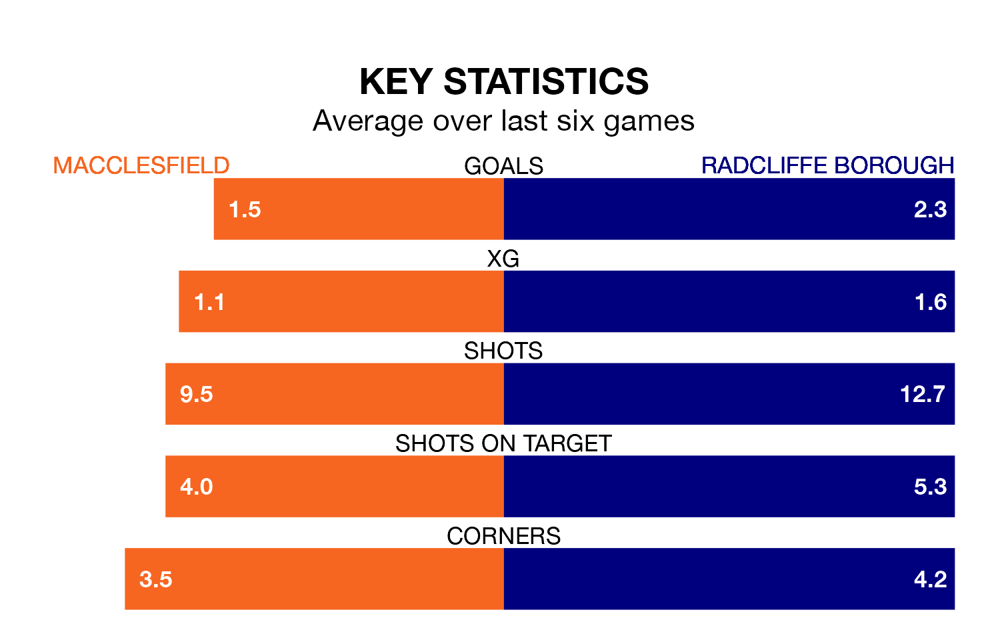

Radcliffe Borough face a challenge to maintain their high-scoring form away against a tight Macclesfield defence on Saturday.
With 67 goals in 24 games, Radcliffe are the top scorers in Northern Premier League ahead of the 3pm kick-off.
They face a Macclesfield side who have scored 51 in 25 matches, but conceded only 29 goals, putting them third among the league's tightest defences – only Rylands and Worksop Town have conceded fewer goals.
Radcliffe are top of the table after 24 games, of which they have won 19 and lost five, earning 57 points.
Macclesfield are five places behind Borough in sixth, with 13 wins and five draws putting them on 44 points.
The home side are in reasonable form in Northern Premier League, with three wins and two draws from their last six games.
With four wins and two losses over that period, the Boro's form is slightly better – they have taken 12 points from 18, compared to Macclesfield's 11.
Macclesfield's last match was on January 9, a 2-1 win against Matlock Town.
Radcliffe beat Basford United 3-1 last time out, on Tuesday.
Updated: 06:13 (UTC), 18/01/24